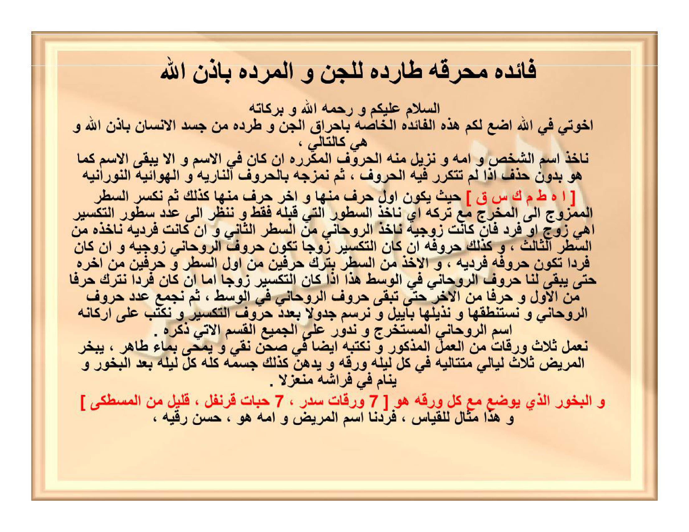

arab
فَائِدَةٌ مُحْرِقَةٌ طَارِدَةٌ لِلْجِنِّ وَالْمَرَدَةِ بِإِذْنِ اللهِ
السَّلَامُ عَلَيْكُمْ وَرَحْمَةُ اللهِ وَبَرَكَاتُهُ
إِخْوَتِي فِي اللهِ، أَضَعُ لَكُمْ هَذِهِ الْفَائِدَةَ الْخَاصَّةَ بِإِحْرَاقِ الْجِنِّ وَطَرْدِهِ مِنْ جَسَدِ الْإِنْسَانِ بِإِذْنِ اللهِ، وَهِيَ كَالتَّالِي
نَأْخُذُ اسْمَ الشَّخْصِ وَأُمِّهِ وَنُزِيلُ مِنْهُ الْحُرُوفَ الْمُكَرَّرَةَ إِنْ كَانَ فِي الِاسْمِ، وَإِلَّا يَبْقَى الِاسْمُ كَمَا هُوَ بِدُونِ حَذْفٍ إِذَا لَمْ تَتَكَرَّرْ فِيهِ الْحُرُوفُ
ثُمَّ نَمْزُجُهُ بِالْحُرُوفِ النَّارِيَّةِ وَالْهَوَائِيَّةِ النُّورَانِيَّةِ: [ ا ه ط م ك س ق ] ، حَيْثُ يَكُونُ أَوَّلُ حَرْفٍ مِنْهَا وَآخِرُ حَرْفٍ مِنْهَا كَذَلِكَ
[Rajah Huruf — tidak diterjemahkan — Ha = ه — 7 huruf]
ثُمَّ نَكْسِرُ السَّطْرَ الْمَمْزُوجَ إِلَى الْمَخْرَجِ مَعَ تَرْكِهِ، أَيْ نَأْخُذُ السُّطُورَ الَّتِي قَبْلَهُ فَقَطْ، وَنَنْظُرُ إِلَى عَدَدِ سُطُورِ التَّكْسِيرِ أَهِيَ زَوْجٌ أَمْ فَرْدٌ...
نَعْمَلُ ثَلَاثَ وَرَقَاتٍ مِنَ الْعَمَلِ الْمَذْكُورِ، وَنَكْتُبُهُ أَيْضًا فِي صَحْنٍ نَقِيٍّ وَيُمْحَى بِمَاءٍ طَاهِرٍ...
وَالْبَخُورُ الَّذِي يُوضَعُ مَعَ كُلِّ وَرَقَةٍ هُوَ: [ 7 وَرَقَاتِ سِدْرٍ، 7 حَبَّاتِ قَرَنْفُلٍ، قَلِيلٌ مِنَ الْمَسْطَكَى ]
وَهَذَا مِثَالٌ لِلْقِيَاسِ، فَرَدْنَا اسْمَ الْمَرِيضِ وَأُمِّهِ هُوَ: حَسَن رُقَيَّة
latin (gaya baru)
Fā'idatun muḥriqatun thāridatun lil-jinni wal-maradati bi'idznillāhi
As-Salāmu 'alaikum wa raḥmatullāhi wa barakātuhū
Ikhwatī fillāhi, adhaʿu lakum hādzihil-fā'idatal-khāshshata bi'ihrāqil-jinni wa thardihī min jasadil-insāni bi'idznillāhi, wa hiya kat-tālī:
Na'khudzu ismas-syakhshi wa ummihī wa nuzīlu minhul-ḥurūfal-mukarrarata in kāna fil-ismi, wa illā yabqal-ismu kamā huwa bidūni ḥadzfin idzā lam tatakarrar fīhil-ḥurūfu.
Tsumma namzujuhū bil-ḥurūfin-nāriyyati wal-hawā'iyyatin-nūrāniyyati: [ A — H — Th — M — K — S — Q ] — [Rajah Huruf — tidak diterjemahkan: ا ه ط م ك س ق — Ha = ه]
Ḥaitsu yakūnu awwalu ḥarfin minhā wa ākhiru ḥarfin minhā kadzālika.
Tsumma naksirus-sathral-mamzūja ilal-makhraji maʿa tarkihī, ay na'khudzus-suthūral-latī qablahū faqath, wa nanzhuru ilā ʿadadi suthūrit-taksīri ahī zaujun am fardun, fa'in kānat zaujiyyatan na'khudzur-rūḥāniyya minas-sathrit-tsānī, wa in kānat fardiyyatan na'khudzuhū minas-sathrit-tsālitsi.
Wa kadzālika ḥurūfuhū, in kānat-taksīru zaujan takūnu ḥurūfur-rūḥāniyya zaujiyyatan, wa in kāna fardan takūnu ḥurūfuhū fardiyyatan.
Wal-akhdzu minas-sathri bitarki ḥarfaini min awwalis-sathri wa ḥarfaini min ākhirihī ḥattā yabqā lanā ḥurūfur-rūḥāniyya fil-wasathi, hādzā idzā kānat-taksīru zaujan. Ammā in kāna fardan natruku ḥarfan minal-awwali wa ḥarfan minal-ākhiri ḥattā tabqā ḥurūfur-rūḥāniyya fil-wasathi.
Tsumma najmaʿu ʿadada ḥurūfir-rūḥāniyya wa nastanthiquhā wa nudzayyiluhā bi-Āyīla, wa narsumu jadwalan biʿadadi ḥurūfit-taksīri wa naktubu ʿalā arkānihis-mar-rūḥāniyyil-mustakharaji, wa nudawwiru ʿalal-jamīʿil-qasamal-ātīyā dzikruhū.
Naʿmalu tsalātsa waraqātin minal-ʿamalil-madzkūri, wa naktubuhū aidhan fī shaḥnin naqiyyin wa yumḥā bimā'in thāhirin. Yubakharul-marīdhu tsalātsa layālin mutatāliyatin, fī kulli lailatin waraqatun, wa yudhanu kadzālika jismuhū kulluhū kulla lailatin baʿdal-bakhūri, wa yanāmu fī firāsyihī munʿazilan.
Wal-bakhūrul-ladzī yudhaʿu maʿa kulli waraqatin huwa: 7 waraqāti sidrin, 7 ḥabbāti qaranfulin, qalīlun minal-masthakā.
Wa hādzā mitsālul-lilqiyāsi, faradnās-mal-marīdhi wa ummihī huwa: Ḥasan Ruqayyah,
Terjemahan
Faedah Membakar dan Mengusir Jin serta Maradah dengan Izin Allah.
Assalamu'alaikum warahmatullahi wabarakatuh.
Wahai saudara-saudaraku karena Allah, aku sajikan untuk kalian faedah khusus untuk membakar jin dan mengusirnya dari tubuh manusia dengan izin Allah, tata caranya sebagai berikut:
Kita ambil nama orang dan ibunya, lalu buang huruf yang berulang jika ada dalam nama. Jika tidak ada huruf berulang, nama tetap utuh tanpa penghapusan.
Kemudian kita campur nama tersebut dengan Huruf-Huruf Api dan Udara Nurani: [ ا ه ط م ك س ق ] — di mana huruf pertama dan huruf terakhir dari rangkaian tersebut diapit oleh huruf itu — Ha ditulis ه.
Kemudian kita lakukan taksir (pemecahan baris) pada baris campuran tersebut sampai kembali ke ma-khraj dengan meninggalkan baris terakhir, yakni hanya mengambil baris-baris sebelumnya saja. Kita lihat jumlah baris taksir, apakah genap atau ganjil: jika genap kita ambil Ruhani dari baris kedua, jika ganjil kita ambil dari baris ketiga.
Begitu pula hurufnya: jika taksir genap maka huruf Ruhani genap, jika ganjil maka hurufnya ganjil. Cara mengambil dari baris: jika taksir genap, buang 2 huruf dari awal dan 2 huruf dari akhir baris sehingga sisa huruf Ruhani di tengah — ini jika taksir genap; adapun jika ganjil, buang 1 huruf dari awal dan 1 dari akhir sampai tersisa huruf Ruhani di tengah.
Kemudian kita jumlah bilangan huruf Ruhani, kita ucapkan ejaannya dan beri akhiran -āyīl / -āyīl, dan kita gambar tabel sejumlah huruf taksir, kita tulis di empat sudutnya nama Ruhani yang dikeluarkan, dan kita putari semuanya dengan qasam yang akan disebutkan.
Kita buat tiga lembar kertas dari amalan tersebut, dan kita tulis juga di piring yang bersih lalu dihapus dengan air suci. Pasien dibakhur selama tiga malam berturut-turut, setiap malam satu lembar, dan tubuhnya dioles seluruhnya setiap malam setelah bakhur, dan ia tidur di ranjangnya menyendiri.
Adapun bakhur yang diletakkan bersama setiap lembar adalah: 7 lembar daun Sidr (Bidara), 7 butir cengkeh, sedikit Mastaka.
Dan ini contoh untuk qiyas: kita andaikan nama pasien dan ibunya adalah: Hasan Ruqayyah.
Syarah dan Penjelasan
Halaman ini adalah Faedah Muhriqah Tharidah — kaidah hisab nama + ibunya tanpa takrir, kemudian di-mix dengan 7 huruf Nariyah-Hawaiyah Nurani [ ا ه ط م ك س ق ] dengan Ha = ه (koreksi: bukan هـ). Taksir dilakukan ilal-makhraj dengan tark baris terakhir, lalu dilihat genap/ganjil untuk menentukan baris sumber Ruhani (baris 2 jika genap, baris 3 jika ganjil) dan jumlah huruf Ruhani mengikuti genap/ganjil. Pengambilan Ruhani dengan membuang 2 huruf depan-belakang (jika genap) atau 1 huruf (jika ganjil) agar tersisa di wasath. Nilai huruf Ruhani dijumlah (hisab jumal), di-istinthaq menjadi nama, diakhiri -Āyīl (mis. ...āyīl). Wafaq digambar sejumlah huruf taksir, 4 sudut diisi nama Ruhani, sekeliling diputar qasam (akan disebut Hal10).
Khususiyah dan Tatacara Praktik
Khasiat: membakar/mengusir jin & maradah dari jasad dengan izin Allah. Tatacara: tulis 3 waraqah amalan + tulis di shahn naqiy (piring bersih) → hapus dengan mā' thāhir (air suci). Bakhur 3 malam mutataliyah: tiap malam bakar 1 waraqah bersama 7 waraqāt Sidr + 7 habbāt Qaranful + qalīl Masthakā, lalu oleskan air hapusan piring ke seluruh jasad setelah bakhur, tidur mun'azilan (menyendiri). Rajah huruf [ ا ه ط م ك س ق ] tidak diterjemahkan — tetap arab dengan Ha = ه.

[Gambar: Hal 09 Asli — rajah Ha = ه — 1.6 MB]
Koreksi Ha: ه (bukan هـ) — Rajah tidak diterjemahkan — Latin dza/sy/sh/dh/zh/ts/th/gh — Hal 01–08 terkunci fb53697